C 언어는 1972년 켄 톰슨과 데니스 리치가 벨 연구소에서 일할 당시 유닉스 운영체제를 만들기 위해 고안한 프로그래밍 언어입니다.
켄 톰슨은 BCPL 언어를 입맛에 맞게 고쳐서 B 언어(벨 연구소의 B)를 개발하고
데니스 리치가 B 언어를 개선하여 C 언어가 탄생했습니다.
C 언어는 이후의 프로그래밍 언어에 직간접적으로 많은 영향을 주었습니다
즉, 프로그래밍 세계의 공통어라 할 수 있습니다.
우리가 지금도 쓰고 있는 Windows, 리눅스, OS X와 iOS, Android, Windows Phone 모바일 운영체제의 핵심 요소인 커널은 C 언어로 만들어져 있습니다(약간의 어셈블리가
포함됨).
즉, 운영체제의 모든 기능을 이용할 수 있는 건 C 언어죠.
다른 언어들은 모두 C 언어의 기능(라이브러리)을 가져다 쓰는 구조입니다.
BCPL → B언어 → C언어 → C++, Java, C#, PHP, Python, Ruby,,,
컴파일(Compile)은 주어진 language로 작성된 컴퓨터 프로그램을 다른 언어의 동등한 프로그램으로 변환하는 프로세스입니다.
소스코드편집(.c) → 컴파일(.obj) → 실행(.exe)
Windows나 OS X처럼 GUI 화면이 나오는 프로그램은 마우스와 키보드를 사용하여 입력을 받습니다. 하지만 C 언어를 배울 때는 콘솔(터미널, 명령 프롬프트)에서 글자만 입출력 하게 되죠.
C 언어는 변수에 저장할 값의 종류에 따라 자료형이 달라집니다.
자료형(타입)의 크기를 바이트(byte) 단위로 구하는 연산자
| 자료형 | 크기 | 범위 | 비고 |
|---|---|---|---|
| char signed char |
1바이트, 8비트 | -128~127 | |
| unsigned char | 1바이트, 8비트 | 0~255 | |
| short short int |
2바이트, 16비트 | -32,768~32,767 | int 생략 가능 |
| unsigned short unsigned short int |
2바이트, 16비트 | 0~65,535 | int 생략 가능 |
| int signed int |
4바이트, 32비트 | -2,147,483,648~ 2,147,483,647 | |
| unsigned unsigned int |
4바이트, 32비트 | 0~4,294,967,295 | int 생략 가능 |
| long long int signed long signed long int |
4바이트, 32비트 | -2,147,483,648~ 2,147,483,647 | int 생략 가능 |
| unsigned long unsigned long int |
4바이트, 32비트 | 0~4,294,967,295 | int 생략 가능 |
| long long long long int signed long long signed long long int |
8바이트, 64비트 | -9,223,372,036,854,775,808~ 9,223,372,036,854,775,807 |
int 생략 가능 |
| unsigned long long unsigned long long int |
8바이트, 64비트 | 0~18,446,744,073,709,551,615 | int 생략 가능 |
C99 표준부터는 stdint.h 헤더 파일로. 크기가 표시된 정수 자료형으로 변수를 선언한다. 자료형 이름에 비트 단위로 크기와 부호를 표시한다. int8_t, uint16_t
limits.h 헤더 파일에는 정수 자료형의 최솟값과 최댓값이 정의되어 있습니다
char num1 = CHAR_MAX; 결과값은 127
| 자료형 | 최솟값 | 최댓값 |
|---|---|---|
| char | CHAR_MIN | CHAR_MAX |
| short | SHRT_MIN | SHRT_MAX |
| int | INT_MIN | INT_MAX |
| long | LONG_MIN | LONG_MAX |
| long long | LLONG_MIN | LLONG_MAX |
| unsigned char | 0 | UCHAR_MAX |
| unsigned short | 0 | USHRT_MAX |
| unsigned int | 0 | UINT_MAX |
| unsigned long | 0 | ULONG_MAX |
| unsigned long long | 0 | ULLONG_MAX |
오버플로우나 언더플로우 현상이 발생하면 의도치 않은 결과가 나올 수 있습니다. 따라서 프로그래밍할때는 정수 자료형의 크기를 항상 생각하고, 값이 범위를 넘어서지는 않는지 반드시 확인합니다.
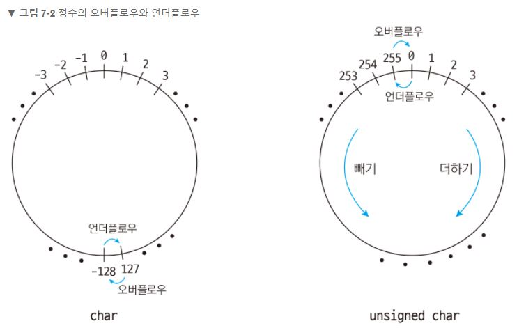
아스키(ASCII)코드란 각 정숫값이 어떤 문자에 해당되는지 표로 나타낸 것이다. 아스키코드는 0부터 127까지 총 128가지의 문자를 나타낸다. 즉 7bit로 표현할 수 있다. 그러므로 1byte인
char 자료형으로 아스키코드 1개를 표현할 수 있다.
C언어에서는 정수 자료형인 char를 이용하여 문자 한 개를 저장한다. char에 문자를 저장할 때는 문자 자체를 저장하는 것이 아니라 문자에 해당하는 정숫값을 저장한다.
아스키코드만으로는 다양한 나라의 언어 등 복잡한 문자를 나타낼 수 없기 때문에 확장된 유니코드 체계를 이용하여 다양한 문자를 표현한다.
| 자료형 | 크기 | 범위 | 비고 |
|---|---|---|---|
| char signed char |
1바이트, 8비트 | -128~127 | 문자 저장 |
| unsigned char | 1바이트, 8비트 | 0~255 | 바이트 단위 데이터 저장 |
| 10진수 | 16진수 | 문자(ASCII) | 10진수 | 16진수 | 문자(ASCII) | 10진수 | 16진수 | 문자(ASCII) | 10진수 | 16진수 | 문자(ASCII) |
|---|---|---|---|---|---|---|---|---|---|---|---|
| 0 | 0x00 | NUL | 32 | 0x20 | Space | 64 | 0x40 | @ | 96 | 0x60 | ` |
| 1 | 0x01 | SOH | 33 | 0x21 | ! | 65 | 0x41 | A | 97 | 0x61 | a |
| 2 | 0x02 | STX | 34 | 0x22 | " | 66 | 0x42 | B | 98 | 0x62 | b |
| 3 | 0x03 | ETX | 35 | 0x23 | # | 67 | 0x43 | C | 99 | 0x63 | c |
| 4 | 0x04 | EOT | 36 | 0x24 | $ | 68 | 0x44 | D | 100 | 0x64 | d |
| 5 | 0x05 | ENQ | 37 | 0x25 | % | 69 | 0x45 | E | 101 | 0x65 | e |
| 6 | 0x06 | ACK | 38 | 0x26 | & | 70 | 0x46 | F | 102 | 0x66 | f |
| 7 | 0x07 | BEL | 39 | 0x27 | ' | 71 | 0x47 | G | 103 | 0x67 | g |
| 8 | 0x08 | BS | 40 | 0x28 | ( | 72 | 0x48 | H | 104 | 0x68 | h |
| 9 | 0x09 | TAB | 41 | 0x29 | ) | 73 | 0x49 | I | 105 | 0x69 | i |
| 10 | 0x0A | LF | 42 | 0x2A | * | 74 | 0x4A | J | 106 | 0x6A | j |
| 11 | 0x0B | VT | 43 | 0x2B | + | 75 | 0x4B | K | 107 | 0x6B | k |
| 12 | 0x0C | FF | 44 | 0x2C | , | 76 | 0x4C | L | 108 | 0x6C | l |
| 13 | 0x0D | CR | 45 | 0x2D | - | 77 | 0x4D | M | 109 | 0x6D | m |
| 14 | 0x0E | SO | 46 | 0x2E | . | 78 | 0x4E | N | 110 | 0x6E | n |
| 15 | 0x0F | SI | 47 | 0x2F | / | 79 | 0x4F | O | 111 | 0x6F | o |
| 16 | 0x10 | DLE | 48 | 0x30 | 0 | 80 | 0x50 | P | 112 | 0x70 | p |
| 17 | 0x11 | DC1 | 49 | 0x31 | 1 | 81 | 0x51 | Q | 113 | 0x71 | q |
| 18 | 0x12 | DC2 | 50 | 0x32 | 2 | 82 | 0x52 | R | 114 | 0x72 | r |
| 19 | 0x13 | DC3 | 51 | 0x33 | 3 | 83 | 0x53 | S | 115 | 0x73 | s |
| 20 | 0x14 | DC4 | 52 | 0x34 | 4 | 84 | 0x54 | T | 116 | 0x74 | t |
| 21 | 0x15 | NAK | 53 | 0x35 | 5 | 85 | 0x55 | U | 117 | 0x75 | u |
| 22 | 0x16 | SYN | 54 | 0x36 | 6 | 86 | 0x56 | V | 118 | 0x76 | v |
| 23 | 0x17 | ETB | 55 | 0x37 | 7 | 87 | 0x57 | W | 119 | 0x77 | w |
| 24 | 0x18 | CAN | 56 | 0x38 | 8 | 88 | 0x58 | X | 120 | 0x78 | x |
| 25 | 0x19 | EM | 57 | 0x39 | 9 | 89 | 0x59 | Y | 121 | 0x79 | y |
| 26 | 0x1A | SUB | 58 | 0x3A | : | 90 | 0x5A | Z | 122 | 0x7A | z |
| 27 | 0x1B | ESC | 59 | 0x3B | ; | 91 | 0x5B | [ | 123 | 0x7B | { |
| 28 | 0x1C | FS | 60 | 0x3C | < | 92 | 0x5C | \ | 124 | 0x7C | | |
| 29 | 0x1D | GS | 61 | 0x3D | = | 93 | 0x5D | ] | 125 | 0x7D | } |
| 30 | 0x1E | RS | 62 | 0x3E | > | 94 | 0x5E | ^ | 126 | 0x7E | ~ |
| 31 | 0x1F | US | 63 | 0x3F | ? | 95 | 0x5F | _ | 127 | 0x7F | DEL |
문자는 ASCII 코드 규칙에 의해 정수로 저장되므로 정수처럼 덧셈, 뺄셈 등을 할 수 있습니다.a의 ASCII 코드값은 97이고 1을 더하면 98입니다. 따라서 98에 해당하는 문자 b가
출력됩니다.
변수,문자,정수 어떤 값으로 사칙연산을 하느냐에 상관없이 결과값이 0~255 사이의 ASCII 코드 범위에만 있으면 됩니다.
| 이름 | 표기법 | 10진수 | 16진수 | %c출력 |
|---|---|---|---|---|
| LF(Line Feed) | \n | 10 | 0x0A | 줄바꿈 |
| CR(Carriage Return) | \r | 13 | 0x0D | 줄의 끝에서 시작 위치로 되돌아감 |
| TAB(horizontal tab) | \t | 9 | 0x09 | 일정 크기만큼 공간을 띄움 |
우리는 실생활에서 1과 1.0을 구분하지 않지만 컴퓨터는 1과 1.0을 정수와 실수로 구분합니다. 마찬가지로 C 언어는 컴퓨터를 제어하는 언어라 정수와 실수를 구분합니다. 따라서 여러분들은 이 부분만 기억하면 되고, 자신이 표현할 데이터가 정수인지 실수인지만 구분할 수 있으면 됩니다.
실수의 방식은 두가지가 있는데, 지수 표기법은 실수를 소스 코드에 표기하거나 화면에 출력하는 방법이며 부동소수점 방식은 실수를 메모리 또는 디스크에 저장하는 방식입니다. 유효자리를 저장할때는 반올림이 기본입니다.
| 자료형 | 크기 | 범위 | 유효자릿수 | 비고 |
|---|---|---|---|---|
| float | 4바이트, 32비트 |
1.175494e-38~3.402823e+38 | 7 | IEEE 754 단정밀도 부동소수점 |
| double | 8바이트, 64비트 |
2.225074e-308~1.797693e+308 | 16 | IEEE 754 배정밀도 부동소수점 |
| long double |
8바이트, 64비트 |
2.225074e-308~1.797693e+308 | 16 | IEEE 754 배정밀도 부동소수점 |
소수점 앞 또는 뒤의 0은 생략할 수 있습니다.
float.h 헤더 파일에 각 자료형 별로 양수 최솟값과 최댓값이 정의되어 있습니다.
| 자료형 | 크기 | 범위 |
|---|---|---|
| float | FLT_MIN | FLT_MAX |
| double | DBL_MIN | DBL_MAX |
| long double | LDBL_MIN | LDBL_MAX |
C 언어에서는 양의실수 언더플로우를 0 또는 쓰레기 값으로 처리합니다. 오버플로우는 최솟값으로 되돌아가지 않고 무한대(infinity) inf가 출력됩니다.
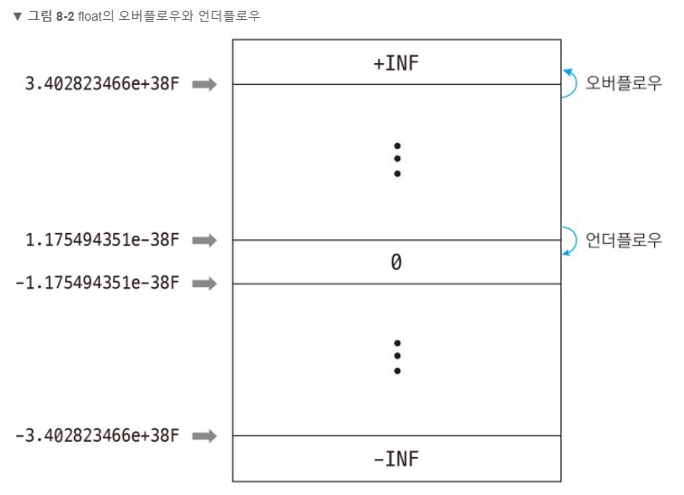
상수는 변하지 않는 값을 뜻합니다. 변수는 한 번 선언한후 계속 다른값을 선언할 수 있지만, 상수는 처음 선언할 때만 값을 할당할 수 있으며 그 다음부터는 상수를 선언하면 에러가 발생한다. 즉 상수는 선언과 동시에 값을 할당하는 초기화로만 선언가능하다. 방식은 변수 앞에 const만 덧붙이면 된다.
리터럴(literal)은 "문자 그대로"라는 뜻인데 C 언어에서는 값 그자체를 의미합니다. 변수에 저장하지 않고 10, 0.1f, 'a', "Hello, world!"처럼 값을 그대로 입력한 것이 리터럴입니다. 그리고 상수(constant)는 변수와같이 리터럴이 저장된 공간입니다. 리터럴은 반드시 표기 방법을 지켜야 합니다.
리터럴의 크기를 명확하게 표현하기 위해 접미사(suffix)를 사용한다. 상수값 뒤에 접미사를 붙여쓴다.
접미사는 대소문자를 모두 사용할 수 있으며, 정수는 10진수, 8진수, 16진수에도 접미사를 사용할 수 있다.
| 접미사 | 정수자료형 |
|---|---|
| 생략 | int |
| l, L | long |
| u, U | unsigned int |
| ul, UL | unsigned long |
| ll, LL | long long |
| ull, ULL | unsigned long long |
| 접미사 | 실수자료형 |
| f, F | float |
| 생략 | double |
| l, L | long double |
사용자에게 표준입력으로 입력을 받고자 할때는 scanf 함수를 사용한다
| 연산자 | 설명 | |
|---|---|---|
| + | 덧셈 | |
| - | 뺄셈 | |
| * | 곱셈 | |
| / | 나눗셈 | |
| % | 나머지(정수를 나눈 뒤 나머지만 구함) | |
| += | 덧셈 후 할당 | |
| -= | 뺄셈 후 할당 | |
| *= | 곱셈 후 할당 | |
| %= | 나머지를 구한 후 할당 | |
| 전위 | ++변수 | 변수 = ++변수; 1증가 후 할당 |
| --변수 | 변수 = --변수; 1감소 후 할당 | |
| 후위 | 변수++ | 변수 = 변수++; 할당 후 1증가 |
| 변수-- | 변수 = 변수--; 할당 후 1감소 | |
나눗셈 후 몫을 제외한 나머지를 구하는 연산, 정수에서만 사용가능하다
조건식에서 비교할 때 사용, 참이면 0이아닌모든값/ 거짓이면 0
| 연산자 | 설명 |
|---|---|
| == | 같음 |
| != | 같지 않음(다름) |
| > | 큼 |
| < | 작음 |
| >= | 크거나 같음 |
| <= | 작거나 같음 |
조건식을 판단할 때 주로 사용, 참이면 0이아닌모든값/ 거짓이면 0
단락 평가(short-circuit evalution)는 첫 번째 값만으로 결과가 확실할 때 두 번째 값은 평가하지 않는 방법으로 AND연산자와 OR연산자에 적용된다
| 연산자 | 설명 |
|---|---|
| && | AND(논리곱), 양쪽 모두 참일 때만 참(0은 무엇과 곱해도0) |
| || | OR(논리합), 양쪽 중 한쪽만 참이라도 참 |
| ! | NOT(논리 부정), 참과 거짓을 뒤집음 |
bool 변수 = true/false;
전용 서식지정자는 없으므로 숫자나 문자열로 출력해야한다
int의 크기는 4바이트, bool의 크기는 1바이트
비트 연산자는 바이트 단위보다 더 작은 비트단위(2진수)로 연산하는 연산자입니다.
각 자리 수의 연산은 독립적이며 다른 자리 수에 영향을 주지 않습니다.
비트의 최대 자리수는 선언되는 자료형의 최대 비트수로 결정된다.
| 연산자 | 설명 |
|---|---|
| & | 비트AND, 모두 1일때 1 |
| | | 비트OR, 하나라도 1이면 1 |
| ^ | 비트XOR(Exclusive OR), 두 비트가 같으면 0 다르면 1 |
| ~ | 비트NOT, 0은 1로 1은 0으로 비트반전 |
| << n | 시프트, 비트를 왼쪽으로 n칸이동 (왼쪽끝삭제 오른쪽끝0추가) |
| >> n | 시프트, 비트를 오른쪽으로 n칸이동 (오른쪽끝삭제 왼쪽끝0추가) |
| &= | 비트 AND 연산 후 할당 |
| |= | 비트 OR 연산 후 할당 |
| ^= | 비트 XOR 연산 후 할당 |
| <<= | 비트를 왼쪽으로 시프트한 후 할당 |
| >>= | 비트를 오른쪽으로 시프트한 후 할당 |
비트 연산자는 부호 있는 자료형과 부호 없는 자료형이 다르게 동작합니다. 부호 있는 자료형의 첫 번째 비트는 부호 비트라고 하는데 이 비트가 1이면 음수, 0이면 양수입니다.
비트가 1= on, 0 = off
플래그로 사용할 변수에 할당연산자와 숫자(mask)를 사용하여 특정 비트를 조작하거나 검사할 수 있다.
수학에서 덧셈보다 곱셈을 먼저하듯이 C언어의 연산자에도 우선순위가 있다.
낮은우선순위의 연산자를 우선으로 연산하고자 할 때는 괄호를 사용한다.
연산자 우선순위가 신경쓰이면 무조건 괄호를 사용하세요. 우선순위를 따져가며 읽어야 되는 코드보다는 괄호가 많더라도 의도가 명확한 코드가 좋습니다.
연산순서 : 1.괄호 → 2.연산자의우선순위 → 3.결합법칙방향
| 우선순위 | 연산자 | 설명 | 결합 법칙(방향) |
|---|---|---|---|
| 1 |
X++ X-- ( ) [ ] . -> (자료형){값} |
증가 연산자(뒤, 후위) 감소 연산자(뒤, 후위) 함수 호출 배열 첨자 구조체/공용체 멤버 접근 포인터로 구조체/공용체 멤버 접근 복합 리터럴 |
→ |
| 2 |
++X --X +X -X ! ~ (자료형) *X &X sizeof |
증가 연산자(앞, 전위) 감소 연산자(앞, 전위) 단항 덧셈(양의 부호) 단항 뺄셈(음의 부호) 논리 NOT 비트 NOT 자료형 캐스팅(자료형 변환) 포인터 X 역참조 X의 주소 자료형의 크기 |
← |
| 3 |
* / % |
곱셈 나눗셈 나머지 |
→ |
| 4 |
+ - |
덧셈 뺄셈 |
→ |
| 5 |
<< >> |
비트를 왼쪽으로 시프트 비트를 오른쪽으로 시프트 |
→ |
| 6 |
< <= > >= |
작음 작거나 같음 큼 크거나 같음 |
→ |
| 7 |
== != |
같음 다름 |
→ |
| 8 | & | 비트 AND곱 | → |
| 9 | ^ | 비트 XOR | → |
| 10 | | | 비트 OR합 | → |
| 11 | && | 논리 AND곱 | → |
| 12 | || | 논리 OR합 | → |
| 13 | ? : | 삼항 연산자 | ← |
| 14 |
= += -= *= /= %= <<= >>= &= ^= |= |
할당 덧셈 후 할당 뺄셈 후 할당 곱셈 후 할당 나눗셈 후 할당 나머지 연산 후 할당 비트를 왼쪽으로 시프트한 후 할당 비트를 오른쪽으로 시프트한 후 할당 비트 AND 연산 후 할당 비트 XOR 연산 후 할당 비트 OR 연산 후 할당 |
← |
| 15 | , | 쉼표(콤마) 연산자 | → |
if 조건문에서 조건의 결과값은 참/거짓으로 나타나고, 참일 때 실행 할 코드 거짓일 때 실행 할 코드를 지정한다. 할당연산자= 와 같다== 를 구분할 것
switch 분기문에서 조건에는 변수가 들어가며(조건식불가), 다수의 리터럴값에 다수의 case를 매칭한다.
조건식이 '참'일때 반복실행, 거짓이 되면 반복종료
반복횟수가 정해져있을 때 주로 사용. 조건식이 참일때 변화식을 실행하면서 코드를 실행. 조건식이 거짓이되면 반복멈춤
순환하는 부분인 루프(loop)는 조건식 → 루프 본체 → 변화식 → 조건식 이다.
반복 횟수가 정해지지 않았을 때, 논리 조건에 따라 반복 여부를 결정할 때 주로 사용.
루프(loop)는 조건식 → 루프 본체 및 변화식 → 조건식 이다.
초기식의 값과는 상관 없이 do코드를 최소 한 번은 실행
루프(loop)는 루프 본체 및 변화식 → 조건식 이다.
반복문 안에 반복문을 넣어 행열을 통제할 수 있다. 관습적으로 변수는 i,j,k 순서로 쓴다
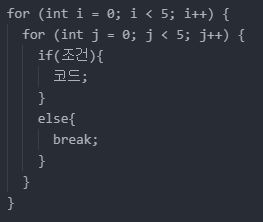
break는 반복을 중단하고 빠져 나오는 역할
continue는 반복흐름을 유지한 상태에서 뒤에 위치한 코드의 실행만 건너뛰는 역할
goto는 별다른 제약 조건 없이 원하는 레이블로 이동
스파게티 코드는 goto를 과도하게 사용해서 프로그램의 흐름이 마치 스파게티 면발처럼 꼬여있다는데서 붙여진 이름입니다. 그래서 스파게티 코드는 가독성이 떨어지고 유지보수가 매우 힘듭니다.
배열은 여러개의 값을 담은 변수
배열에 값이 저장된 공간을 요소(element)라고 하며, 배열의 요소에 접근할 때 인덱스로 음수를 지정하거나, 배열의 크기를 벗어난 인덱스를 지정해도 컴파일 에러가 발생하지 않습니다. 하지만 실행을 해보면 쓰레기값이 출력됩니다. 즉, 배열의 범위를 벗어난 인덱스에 접근하면 배열이 아닌 다른 메모리 공간에 접근하게 됩니다.
2차원 배열은 세로x가로 평면 구조로 이루어져 있으며 행과 열 모두 0부터 시작합니다.
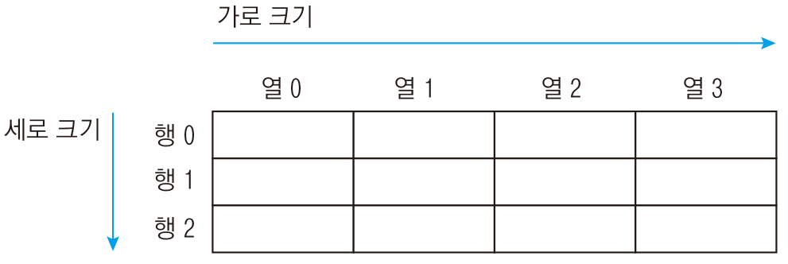
자료형 배열[높이][세로크기][가로크기];
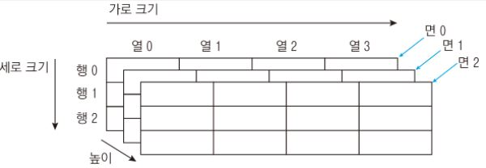
변수는 컴퓨터의 메모리에 생성되며 메모리 주소는 고정된 것이 아니라 컴퓨터마다, 실행할 때마다 달라집니다. C언어에서는 메모리 주소도 데이터로 취급하는데, 이 주소정보를 담은 자료형을 포인터라고하며
모든 자료형에 *를 붙여 포인터자료형으로 선언할 수 있다.
& 주소연산자는 데이터의 시작주소를 나타낸다. 주소는 16진수로 저장되고 음수는 존재하지 않는다
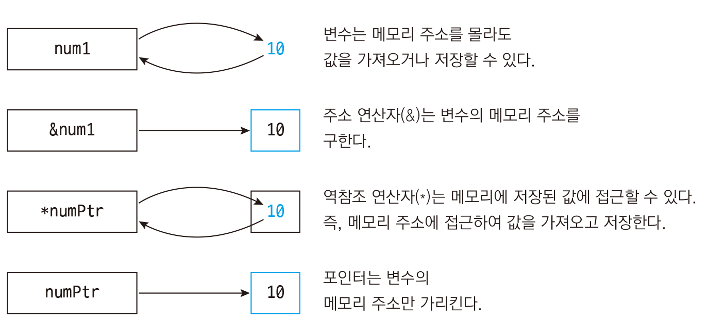
동적메모리할당(dynamic memory allocation)은 포인터에 원하는 만큼 메모리 공간을 할당 받아 사용후 해제하는 방식이다. 필요한 메모리 크기는 바이트 단위로 지정하며 양수만 사용한다
기본적으로 C 언어는 자료형이 다른 포인터끼리 메모리 주소를 저장하면 컴파일 경고(warning)가 발생합니다. 하지만 void 포인터는 자료형이 정해지지 않은 특성 때문에 어떤 자료형으로 된 포인터든 모두 저장할 수 있습니다. 반대로 다양한 자료형으로 된 포인터에도 void 포인터를 저장할 수도 있습니다. 이런 특성 때문에 void 포인터는 범용 포인터라고 합니다.
포인터를 선언할 때 *를 두 번 사용하면 포인터의 포인터(이중 포인터)를 선언하고, 삼중 사중 그 이상의 포인터를 만들 수 있다
주소 00000000 으로 아무것도 가리키지 않는 상태를 뜻합니다. 따라서 역참조는 할 수 없습니다. 실무에서는 다음과 같이 포인터가 NULL인지 확인한 뒤 NULL이면 메모리를 할당하는 패턴을 주로 사용합니다.
메모리 주소에 정수값을 더하거나 빼면 포인터 자료형의 크기만큼 메모리 주소가 증가, 감소합니다. 즉, 포인터 연산을 하면 다른 메모리 주소에 접근할 수 있습니다. * / 연산자와 실수는 연산불가
배열은 주솟값이기 때문에 포인터에 바로 넣을 수 있습니다. 배열과 포인터의 차이점은 크기이다. 배열은 요소의 전체 합 만큼의 크기를 가지고, 포인터는 그냥 선언된 자료형의 크기만 차지한다
문자는 'a'처럼 글자가 하나만 있는 상태를 뜻하고 문자열은 "Hello"처럼 글자 여러 개가 계속 이어진 상태를 뜻합니다.
C언어에는 문자열자료형이 따로 없어 문자열은 " "(큰따옴표)로 묶어 char 포인터나 배열에 저장하여 사용합니다.
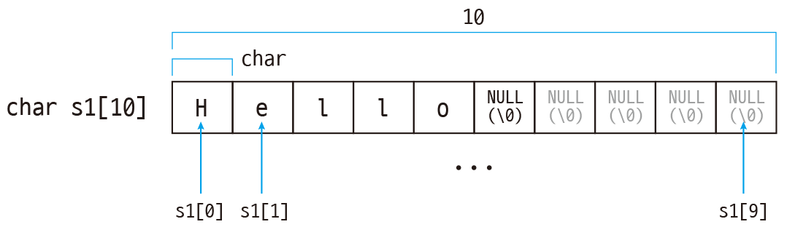
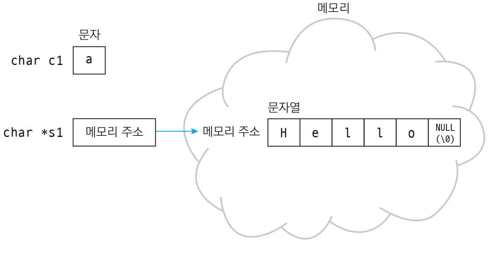
포인터문자열은 변수 s1안에 저장되지 않고 문자열이 있는 곳의 메모리 주소만 저장됩니다. 저장위치는 컴파일러가 알아서 결정하고 읽기전용이기때문에 초기할당 후 수정이불가합니다.
구조체는 struct 키워드로 정의하며, 관련 정보를 하나의 의미로 묶을 때 사용합니다.구조체는 보통 main 함수 바깥에 정의합니다. 만약 함수 안에서 구조체를 정의하면 해당 함수 안에서만 구조체를 사용할 수 있습니다.
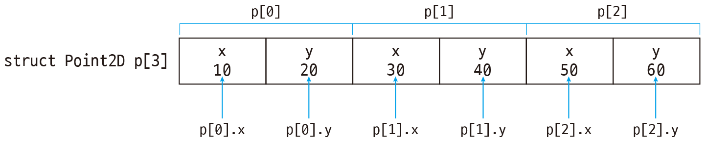
보통 구조체는 멤버 변수가 여러 개 들어있어서 크기가 큰 편입니다. 그래서 구조체 변수를 일일이 선언해서 사용하는 것보다는 포인터에 메모리를 할당해서 사용하는 편이 효율적입니다. main함수 밖에서 함수를 만들어서 구조체를 사용할 때 포인터를 자주 활용하게 됩니다.
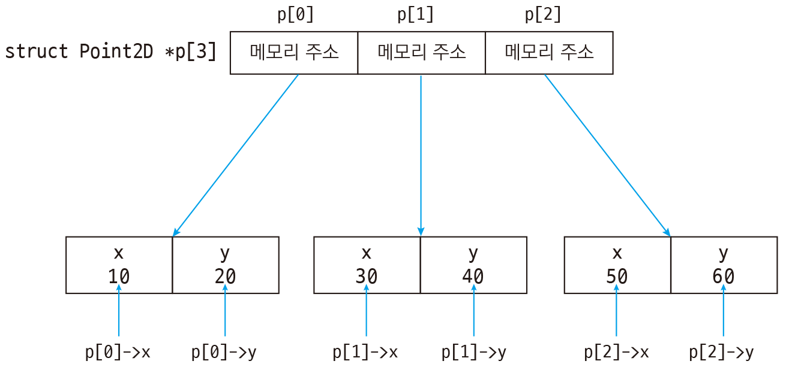
C 언어는 CPU에서 메모리에 접근하는 효율을 높이기 위해 구조체를 일정한 크기로 정렬을 합니다. 이때 멤버 중에서 큰 자료형 크기의 배수로 정렬하며 남는 공간을 채우는 것을 패딩이라 부릅니다. 컴파일러에서 제공하는 지시자를 사용하면 정렬 크기를 수기 조종 가능하다. 구조체를 1바이트 크기로 정렬하는 것은 구조체의 내용을 파일에 쓰거나 네트워크로 전송할 때 쓰인다.
구조체의 멤버는 각 자료형 크기만큼 공간을 차지했습니다. 하지만 구조체 비트 필드를 사용하면 구조체 멤버를 비트 단위로 저장할 수 있습니다.(정수 자료형만 사용가능) CPU나 기타 칩의 플래그를 다루는 저수준(low level) 프로그래밍을 할 때 기본 자료형보다 더 작은 비트 단위로 값을 가져오거나 저장하는 경우가 많으므로 구조체 비트 필드가 유용하게 사용됩니다.
구조체는 멤버들이 각각 공간을 차지하지만 공용체는 멤버중 가장 큰 자료형 공간을 모든 멤버가 공유합니다. 공용체는 여러 멤버에 동시에 접근하지 않는 경우 같은 메모리 레이아웃에 멤버를 모아둘 때
사용합니다. 특히 공용체는 임베디드 시스템이나 커널 모드 디바이스 드라이버 등에서 주로 사용하며 보통은 거의 쓰지 않습니다.
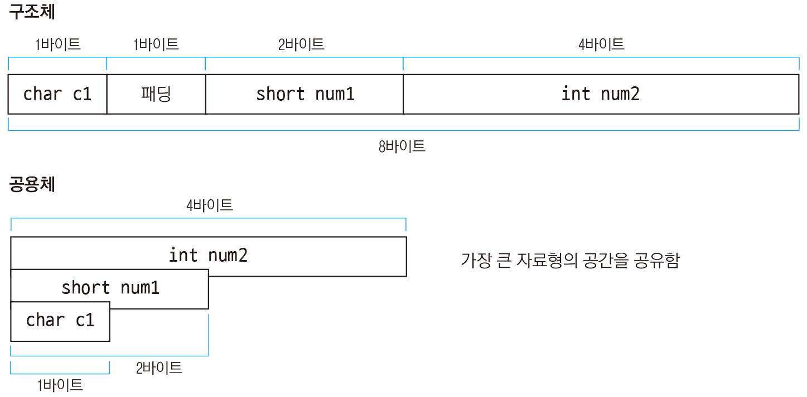
열거형은 공통된 상수멤버들을 모아 상수인 정수값을 부여한다. 열거형 첫멤버에 초기값을 지정하면 자동으로 1씩 증가하고, 초깃값을 지정하지 않으면 0부터 시작한다. 모든 멤버에 정수상수값을 각각 부여할 수도 있다.
자료형의 크기가 큰 쪽, 표현 범위가 넓은 쪽으로 변환되는 것은 값손실이 없기때문에 컴파일러가 자동으로 변환한다. 예를들어 서로 다른 자료형으로 연산을 했을 때, 크기가 큰 자료형에 작은 자료형을
할당했을때 큰 자료형으로 암시적 형 변환이 일어납니다.
정수와 실수를 함께 연산하면 결괏값은 실수로 자동변환된다. 왜냐하면 실수가 정수보다 표현 범위가 넓기 때문이다.
자료형 크기가 작은 쪽, 표현 범위가 좁은 쪽으로 변환되는 것은 값손실이 일어나기 때문에 컴파일 경고가 발생한다. 따라서 형 축소는 프로그래머가 의도적으로 변환해야 가능하다.
기본자료형을 명시적 형 변환 할때 변수나 값 앞에 변환할 자료형을 붙인 뒤 (괄호)로 묶어주면 됩니다.
포인터를 형 축소 하게 되면 변수가 할당된 메모리 공간은 그대로이고, 주소를 가져오는 포인터의 크기만 달라져 일부주소만 가져온다. 반대로 포인터가 형 확장하면 옆의 메모리 공간을 침범하여 주소를 가져오게 됩니다.
특정 용도의 코드들을 한 곳에 모아놓은 것을 뜻한다. printf, scanf 등도 모두 C 언어에서 미리 만들어둔 함수이다.
기본적으로 main함수 바깥 위에 함수를 정의하여야한다. 그렇지 않을경우 함수선언을 추가적으로 하여 해당함수가 어딘가 있다고 알려줘야한다.
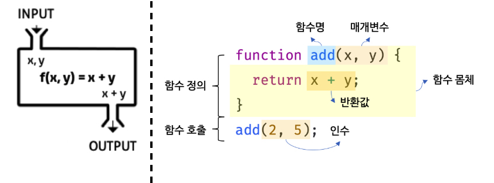
함수는 독립된 공간이므로 함수 안에서 선언된 변수는 다른 함수에서 사용할 수 없습니다. 함수 안에 선언된 변수의 값을 다른 함수에서 사용하고 싶다면 반환값과 매개변수를 이용해야 합니다.
parameter (매개변수,형식매개변수,인자) : 함수를 정의할때 함수 바깐에서 전달된 값을 담아 함수 내부에서 사용할 수 있게 정의된 변수
argument (인수,실행전달인자,전달인자) : 함수가 호출될 때 함수로 값을 전달해주는 변수
매개변수로 문자열을 받으려면 매개변수를 문자열포인터로 지정하거나 배열로 지정한다.
일반인수는 함수안으로 값을 복사하여 전달하고 함수안에서 쓰여진 변수는 함수안에서만 유효하므로 바깥으로 값을 내보낼 수 없다. 포인터 매개변수를 사용하면 주소값인수가 함수 안에
메모리주소를 전달하고 함수 안에서는 전달된 변수의 메모리주소에 접근하여 값을 저장할 수 있다.
또한 input인 매개변수는 여러개를 정의할 수 있지만, output인 return값은 하나만 정의 할 수 있다. 여러개를 반환하고 싶을 때 주로 사용하는 방법은 포인터 매개변수이다.같은
원리로 함수 바깥으로 여러개의 값을 전달 하는 scanf함수는 인수로 &주소값을 사용한다
배열도 포인터와 같으므로 함수 안에서 매개변수로 받은 배열의 요소를 변경하면 함수 바깥에 있는 배열의 요소가 바뀌게 됩니다.
함수안의 지역변수는 다른 함수로 입출입이 불가하기 때문에 포인터 매개변수를 이용하여 일반변수의 주소값을 가져와사용하였다. 그렇다면 포인터의 주소값을 얻어오려면 어떻게 해야 할까? 이중포인터 매개변수를 사용한다
매개변수로 구조체를 정의할 수있으며, 구조체포인터도 정의가능하다
C 언어에서 함수를 사용하다 보면 printf, scanf같이 매개변수의 개수가 정해지지 않은 함수가 있습니다. 이렇게 매번 함수에 들어가는 인수(argument)의 개수가 변하는 것을 가변 인자(가변 인수, variable argument)라고 합니다.
반환값은 함수를 호출해준 바깥에 결괏값을 알려주기 위해 사용한다. 중요한 점은 반환값과 반환값자료형이 일치해야 하며, 반환값은 하나여야 한다.
return은 c언어에서 미리 정해놓은 예약어로서 '현재함수에서 빠져나가 그 함수를 호출했던 곳으로 되돌아 가라'는 뜻이다. return은 함수의 어디에도 위치할 수
있으며 return이 실행되는 즉시 그 함수 또한 실행 종료된다. main함수에서 return 0;을 반환하는 이유는 성공했을때 0 실패했을때 1을 반환하는 것이 보통이기 때문이다.
의문 : return뒤에 함수가 오지는 못하나?
답 : 가능함 재귀함수는 반환값으로 자기자신 넣잖아. 함수포인터를 이용해서 함수자체를 반환하는것도 가능하고 근데
반환값과 반환값자료형이 항상 일치해야하는거 조심
포인터를 반환하려면 반환값자료형과 함수이름 사이에 * 를 붙인다.
함수안에서 변수를 선언(지역변수)하고 반환하면 함수가 끝나면 해당 변수는 사라지고 메모리에는 다른 값이 덧씌워질 수 있다. 따라서 함수를 벗어나도 메모리가 유지되는 malloc함수를 통해
메모리를 할당한 뒤 함수를 호출해서 사용하고 그 뒤에 free함수로 메모리 해제를 해주어야한다.
의문 : free함수로 해제할때 최초선언된 변수를 넣는게 아니라, free함수를 사용하는 함수 안에서 변환된 변수 기준으로 넣어야하나?
답 : ㅇㅇ 그리고 심지어 동적메모리할당함수를 다른 함수에서 반환해서 사용할때마다 그 함수 안에서 해제해줘야함
추가의문 : 그럼 함수안에서 동적메모리할당 코드를 작성했을때 다른곳에서 반환되서 쓰이지 않으면 해제할 필요도 없는 건가? 함수가 불러와져서 사용될때만 해제해야하는거야?
답 : ★★
의문 : 왜 문자열은 다른 함수에서 선언한뒤 반환하더라도 메모리에서 사라지지 않지?
답 : 컴퓨터에서는 지역 변수를 선언하고, 함수를 호출할 때 스택을 사용하기 때문입니다. 스택은 접시 쌓기에 비유할 수 있는데요. 접시를 순서대로 아래에서 위로 쌓고, 위에서부터 꺼내 쓸
수는 있지만 중간부터 빼서 쓸 수는 없는 규칙이 있습니다.함수를 호출하면 접시를 하나 쌓습니다. 그리고 함수 안에서 변수를 선언할 때마다 접시를 계속 쌓게 됩니다. 만약 함수가 끝나면 함수 부분에
해당하는 접시만 중간에서 뺄 수 없기 때문에 위에 있는 변수부터 차례대로 꺼낸 뒤 함수를 꺼냅니다. 이런 규칙 때문에 함수 안에 선언된 변수는 함수가 끝나면 사라지게 됩니다.정적 변수는 스택을
사용하지 않으며 메모리에서 계속 유지되기 때문에 함수가 끝나도 사라지지 않습니다. 따라서 함수에서 정적 변수는 & (주소 연산자)로 메모리 주소를 반환해도 됩니다.
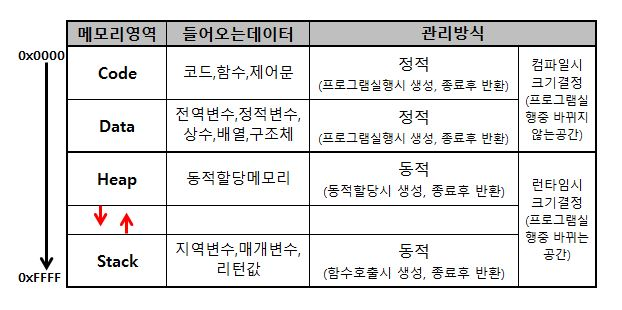
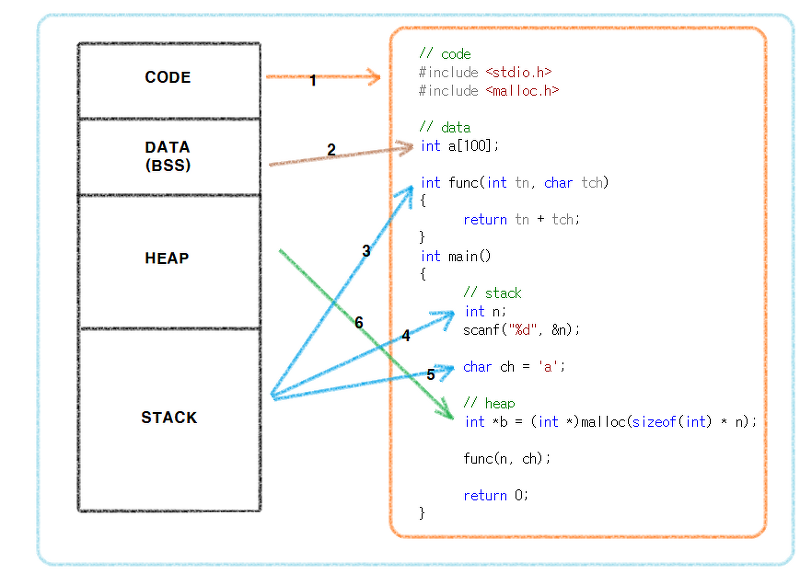
C 언어의 함수는 반환값을 하나만 사용할 수 있다. 여러개의 데이터를 반환하려면 구조체 함수를 사용한다. 일반적으로 구조체변수를 정의하면 하나씩 멤버를 매칭하며 할당하는데, 함수안에 구조체변수와 멤버매칭값을 넣으면 한번에 반환할 수 있다
함수 안에서 함수 자기자신을 호출하는 방식을 재귀호출(recursive call)이라고 합니다. 재귀호출을 사용하려면 반드시 종료 조건을 만들어주어야 합니다.
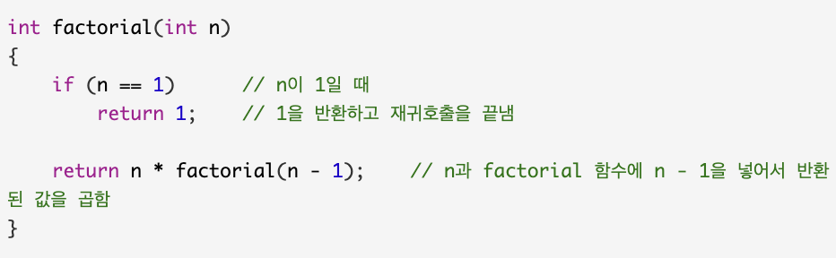
함수를 가르키는 포인터.(함수이름도 사실은 포인터)
함수를 배열 또는 구조체에 넣거나, 함수 자체를 함수의 매개변수로 넘겨주고, 반환값으로 가져올때 함수포인터를 사용할 수 있다
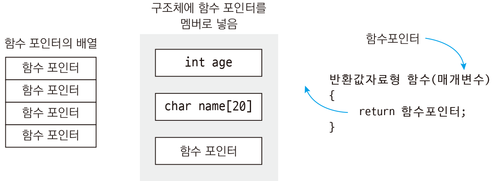
함수 포인터를 배열로 만들어 다양한함수를 하나의 포인터에 담아 인덱스로 호출 할 수 있다
함수 포인터를 구조체 멤버로 정의하기
fopen → 쓰기/읽기함수 → fclose
| 파일 모드 |
기능 | 설명 |
|---|---|---|
| "r" | 읽기 | 파일을 읽기전용으로 엽니다. 파일이 반드시 있어야 가능 |
| "w" | 쓰기 | 새 파일을 생성합니다. 만약 파일이 있으면 내용을 덮어씁니다. |
| "a" | 추가 | 파일을 열어 파일 끝에 값을 이어 씁니다. 만약 파일이 없으면 파일을 생성합니다. |
| "r+" | 읽기 쓰기 |
파일을 읽기/쓰기용으로 엽니다. 단, 파일이 반드시 있어야 하며 파일이 없으면 NULL을 반환 |
| "w+" | 읽기 쓰기 |
파일을 읽기/쓰기용으로 엽니다. 파일이 없으면 파일을 생성하고, 파일이 있으면 내용을 덮어씁니다. |
| "a+" | 추가 읽기 쓰기 |
파일을 열어 파일 끝에 값을 이어 씁니다. 만약 파일이 없으면 파일을 생성합니다. 읽기는 파일의 모든 구간에서 가능하지만, 쓰기는 파일의 끝에서만 가능합니다. |
| 옵션 | 단독사용불가 | |
| t | 텍스트 모드 |
파일을 읽거나 쓸 때 개행문자 \n와 \r\n을 서로 변환합니다. ^Z 파일의 끝으로 인식하므로 ^Z까지만 파일을 읽습니다(^Z는 Ctrl+Z 입력을 뜻합니다). |
| b | 바이너리 모드 |
파일의 내용을 그대로 읽고, 값을 그대로 씁니다. |